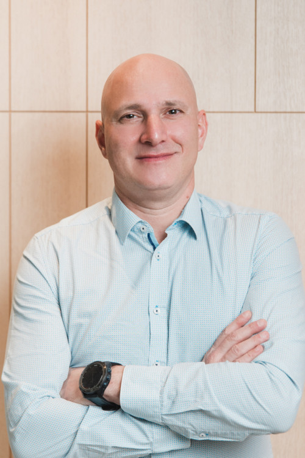

Keynote speakers
Dr. William A Banks attended medical school at University of Missouri, Columbia. He recently got appointed as Emeritus Professor at the Puget Sound Veteran Affairs Health Center, where he has been working since 2010. His work has focused on brain-body communication as mediated by the handling of peptides, regulatory proteins, and other informational molecules by the blood-brain barrier. He has applied this approach to study obesity/body weight regulation, Alzheimer’s disease/neurodegenerative diseases, neuroimmunology/ neuroinflammation, CNS manifestations of diabetes mellitus, drug delivery to the CNS, and AIDS. He has also published on animal assisted therapy in nursing homes, robotics in geriatric medicine, sleep physiology, traumatic brain injury, and was first author on the paper first describing primary adrenal hyperplasia.
He has received numerous awards, honors, and lectureships including the Middleton Award and the Norman Cousins Award and is the past president of the Psychoneuroimmunology Research Society. He is former editor-in-chief of Current Pharmaceutical Design and has served on 21 other editorial boards including Endocrinology; Journal of Pharmacology and Experimental Therapeutics; Brain, Behavior, and Immunity; Peptides; Journal of Alzheimer’s Disease; Experimental Biology and Medicine; Journal of Cerebral Blood Flow and Metabolism. He has delivered over 280 invited lectures at the national/international level, has over 850 Google Scholar publications, over 72000 Google Scholar citations, and an H-index of 141.
https://geriatrics.uw.edu/people/william-banks
https://molecularhydrogeninstitute.org/dr-william-allen-banks/
Dr. Eszter Farkas, PhD, DSc, is a neuroscientist and Chair of the Department of Cell Biology and Molecular Medicine at the University of Szeged, Hungary, and Group Leader of the HCEMM–USZ Cerebral Blood Flow and Metabolism Research Group. Her research focuses on the molecular and cellular mechanisms of cerebral ischemia, with particular emphasis on astrocyte function, brain edema formation, and neurovascular coupling.
Dr. Farkas obtained her PhD in Neurobiology from the University of Groningen and has held research and academic positions in Hungary, the Netherlands, the United Kingdom, and the United States. She has received several prestigious awards, including the L’Oréal–UNESCO International Rising Talents Award, and has led multiple national and international research projects.
Her work aims to identify novel biomarkers and therapeutic targets for ischemic stroke, contributing to improved diagnosis and neuroprotective strategies. She is actively involved in international scientific communities, editorial boards, and conference organization in the field of cerebral blood flow and microcirculation.
Hideaki Nishihara is an Assistant Professor, neurologist and clinician-scientist for Neurotherapeutics at the Yamaguchi University, Japan. He leads translational research on BBB dysfunction in neuroinflammatory and neurodegenerative disorders. His team develops patient-derived iPSC-based BBB models to uncover molecular mechanisms and therapeutic targets underlying disorders such as multiple sclerosis (MS), amyotrophic lateral sclerosis (ALS), and hereditary cerebral small vessel diseases.
https://www.ibbsoc.org/more-info/council?view=article&id=254:hideaki-nishihara&catid=15

Ádám Dénes is the head of the Neuroimmunology Research Group at the HUN-REN Institute of Experimental Medicine. His research group focuses on inflammatory processes, which are major contributors to the development of neurological diseases.
Ádám Dénes graduated as an Immunologist at the Eötvös Loránd University, and then obtained his PhD in Neuroendocrinology at Semmelweis University. His interests focus on the neuroregulation of immune processes and inflammatory processes in the nervous system. The main aim of the research team’s studies is to understand the processes of inflammation during adverse effects in the CNS and to identify new therapeutic targets. His group identified multiple roles of microglia in the regulation of neuronal activity and damage, and the role of microglia in the regulation of cerebral blood flow.
Download here the:
Poster requirements: A0, standing format